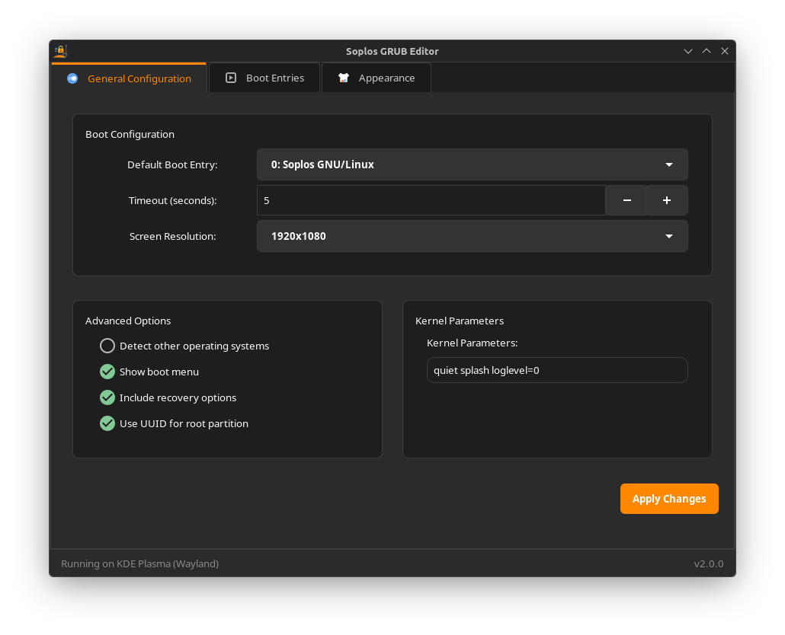
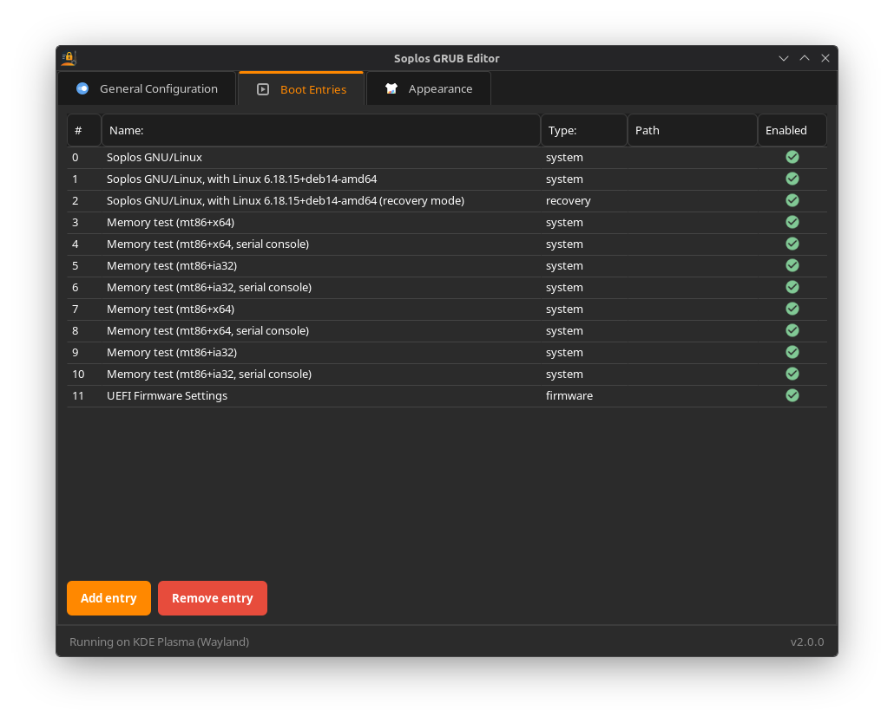
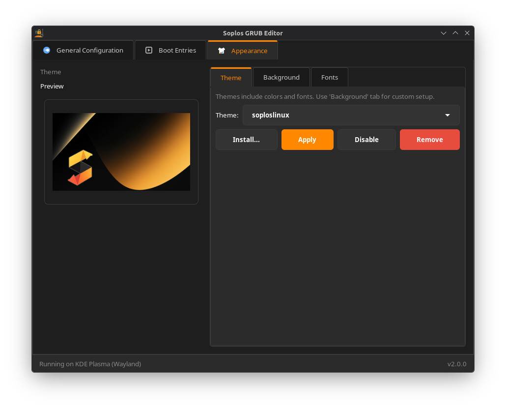
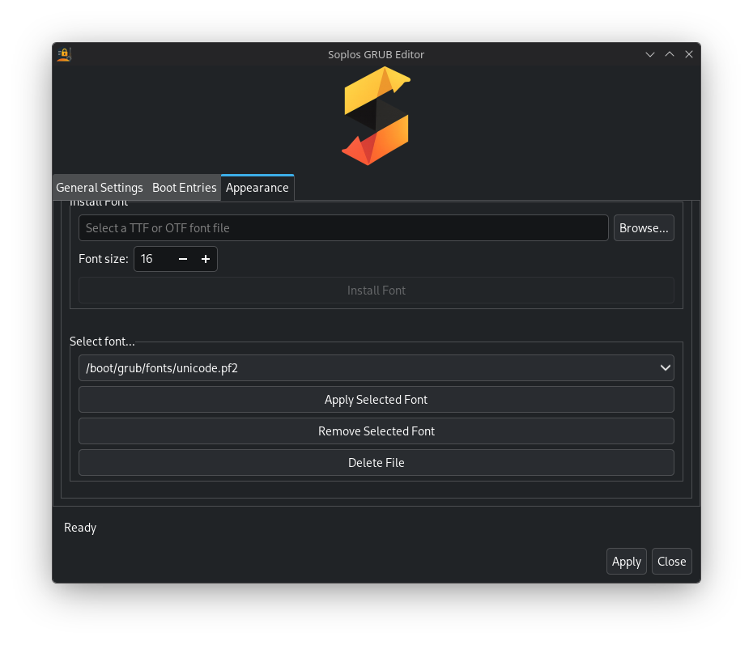

ES
ES FR
FR PT
PT DE
DE IT
IT RO
RO RU
RUFeatures
Edit Boot Entries
Modify, add or remove GRUB boot entries safely with validation and backups.
Themes & Fonts
Install and preview GRUB themes, convert fonts (TTF/OTF → PF2) and apply them.
Safe Changes
Automatic backups before applying changes and configuration validation.
Internationalized
Dynamic translations with support for multiple languages and efficient loading.
Installation
Install from the official repositories or via the Debian package:
Terminal
sudo apt update
sudo apt install soplos-grub-editorUsage
- Open the application: Run
soplos-grub-editorfrom the menu. - Backup first: The app creates an automatic backup before applying changes.
- Apply changes: Use the preview to validate configuration before committing.
Screenshots
Click any image to open fullscreen:




Changelog
All notable changes are documented here (descending order).
1.0.5 — 2025-07-27
🛠️ Mejorado - Metainfo y compatibilidad AppStream/DEP-11
- Metainfo finalizado y validado para AppStream/DEP-11.
- Agregados iconos del programa en 48x48, 64x64 y 128x128 para compatibilidad con centros de software.
- Mejoras menores en estructura y etiquetas.
- Cambio de icono del programa.
1.0.4 — 2025-07-15
🛠️ Mejorado - Metainfo y compatibilidad AppStream/DEP-11
- Metainfo finalizado y validado para AppStream/DEP-11.
- Agregados iconos del programa en 48x48, 64x64 y 128x128 para compatibilidad con centros de software.
- Mejoras menores en estructura y etiquetas.
1.0.3 — 2025-07-14
🛠️ Corregido - Metainfo y visibilidad en centros de software
- Correcciones finales en el archivo metainfo para asegurar visibilidad y compatibilidad total en centros de software.
- Validación y pruebas en múltiples centros de software.
- Mejoras menores en la estructura y etiquetas AppStream.
1.0.2 — 2025-07-13
🌍 Añadido - Internacionalización Completa
- Sistema de traducciones dinámico con carga bajo demanda.
- 8 idiomas soportados y detección automática de idioma del sistema.
- Reestructuración del módulo de traducciones y mejoras de rendimiento.
1.0.1 — 2025-06-15
🔧 Mejorado
- Sistema de conversión de fuentes más robusto.
- Gestión de errores mejorada en instalación de fuentes.
- Interfaz más responsiva.
1.0.0 — 2025-06-13
🎉 Lanzamiento Inicial
- Editor gráfico completo para configuración GRUB2.
- Interfaz GTK3 intuitiva con pestañas organizadas.
- Gestión de temas GRUB y conversión de fuentes.
Types of Changes
- Añadido para nuevas características
- Cambiado para cambios en funcionalidad existente
- Obsoleto para características que serán eliminadas
- Eliminado para características eliminadas
- Corregido para corrección de errores
- Seguridad para vulnerabilidades
Soporte y contribuciones
Documentación: soploslinux.com/docs/soplos-grub-editor
Issues / Contribuciones: github.com/SoplosLinux/tyson